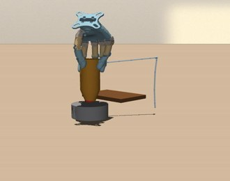
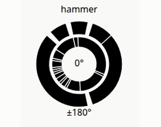
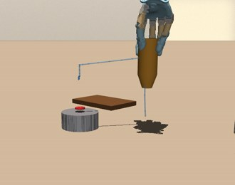
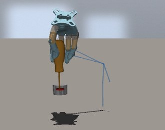

Frozen AUTO3 Mixed model_8000.pt (Object-only) · scene hand_table_v1 · 2026-11-16 ·
branch jd/mixed-s0-s2 · one deterministic placement per cell · build 11-19 09:55
The framework — S0-boundary-aware manipulation (ASPIRE memory + GaP graphs + our Atlas) → · the skills → · worked example: S2 call → generated S0 reference (with plots) →
Experiment writeup — closed-loop programs: 60% → 85% → 88% on 48 pre-registered scenes →
System — the flow: scene → sub-task → tool calls → retry (self-contained menu) → · Method — what decides where we probe → · References →
NEW: Transfer SUCCESS — closed-loop S0 grasps & lifts on the HandsOn benchmark arm (video) NEW: Transfer test — closed-loop S0 on the HandsOn benchmark arm (video) →rarr;
One frozen S0 + its closed-loop task cards, staged in everyday settings with collidable distractor objects and room backdrops. No per-scene tuning. The fourth object (the dumbbell) was never in S0's training data. Thin blue line = generated object reference; sphere = current target.



framework/s0.py)
align_actual /
keep_point re-anchor on the measured object; fingers are S0's only outputEarlier bulb-only 4-scene study (3/4 pass; the bedside bulb rolls off its narrow column — an honest failure): desk lamp · workbench · bedside ✗ · pantry. Rendering: simulator replay with styled materials and composited depth-of-field room backdrops — the physics and outcomes are the real runs.
Each pair runs the same checkpoint. The left side is the naive command at the boundary; the right side is the ability gained by planning with the Capability Atlas (composition, per-object parameters, or the recorded regrip hold). The generated reference trajectory is overlaid in each panel: the faint blue line is the full planned object path, the blue sphere is the current object target (it hides inside the object while tracking is good and separates visibly on a drop), and the orange sphere is the wrist target. The overlay shows the per-tick reference the policy actually saw, so gated runs show the reference waiting for lift confirmation.
Outcome of grasp+lift per starting yaw. The gated strip is the closed-loop CPU protocol (30° grid + fine probes); the open-loop strip is the GPU batch protocol (5° grid). Bulb picks only in [−55°, +15°]; the screwdriver's open-loop failures form one drop arc [−110°, −10°]; the hammer flips with protocol — the headline coupling below.
outer ring = gated protocol · inner ring = open-loop · 0° at top, clockwise. An arc shows the object-facing directions where S0 can / cannot pick it up.
| object | route | yaw range | outcome |
|---|---|---|---|
| hammer | gated | -180…-60 | pass |
| hammer | gated | -30…-30 | no_lift |
| hammer | gated | +0…+0 | pass |
| hammer | gated | +30…+50 | no_lift |
| hammer | gated | +60…+150 | pass |
| hammer | open | -180…-155 | drop |
| hammer | open | -150…-150 | pass |
| hammer | open | -145…-140 | drop |
| hammer | open | -135…-135 | pass |
| hammer | open | -130…-125 | drop |
| hammer | open | -120…-115 | pass |
| hammer | open | -110…-110 | drop |
| hammer | open | -105…-105 | pass |
| hammer | open | -100…-100 | drop |
| hammer | open | -95…-85 | pass |
| hammer | open | -80…-80 | drop |
| hammer | open | -75…-60 | pass |
| hammer | open | -55…-15 | drop |
| hammer | open | -10…-5 | no_lift |
| hammer | open | +0…+110 | drop |
| hammer | open | +115…+115 | pass |
| hammer | open | +120…+175 | drop |
| screwdriver | gated | -180…-120 | pass |
| screwdriver | gated | -90…-30 | drop |
| screwdriver | gated | +0…+150 | pass |
| screwdriver | open | -180…-115 | pass |
| screwdriver | open | -110…-50 | drop |
| screwdriver | open | -45…-45 | pass |
| screwdriver | open | -40…-10 | drop |
| screwdriver | open | -5…-5 | pass |
| screwdriver | open | +0…+0 | drop |
| screwdriver | open | +5…+175 | pass |
| bulb | gated | -180…-60 | no_lift |
| bulb | gated | -30…+0 | pass |
| bulb | gated | +30…+120 | no_lift |
| bulb | gated | +150…+150 | pass |
| bulb | open | -180…-170 | no_lift |
| bulb | open | -165…-165 | drop |
| bulb | open | -160…-60 | no_lift |
| bulb | open | -55…+15 | pass |
| bulb | open | +20…+175 | no_lift |
| pen10 (lying) | gated | -120…+180 | no_lift |
| pen10 (lying) | open | -180…+135 | no_lift |
| mug80 (lying) | gated | -120…+60 | no_lift |
| mug80 (lying) | gated | +120…+120 | drop |
| mug80 (lying) | gated | +180…+180 | no_lift |
| mug80 (lying) | open | -180…+0 | no_lift |
| mug80 (lying) | open | +45…+135 | drop |
| ball25 (any) | gated | -120…+180 | no_lift |
| ball25 (any) | open | -180…+135 | no_lift |
| lkey50 (flat) | gated | -120…+180 | no_lift |
| lkey50 (flat) | open | -180…+135 | no_lift |
| plate160 (flat) | gated | -120…+180 | no_lift |
| plate160 (flat) | open | -180…+135 | no_lift |
| object | route | yaw° | outcome |
|---|---|---|---|
| hammer | gated (CPU) | -180 | pass |
| hammer | gated (CPU) | -150 | pass |
| hammer | gated (CPU) | -120 | pass |
| hammer | gated (CPU) | -100 | pass |
| hammer | gated (CPU) | -90 | pass |
| hammer | gated (CPU) | -60 | pass |
| hammer | gated (CPU) | -30 | no_lift |
| hammer | gated (CPU) | +0 | pass |
| hammer | gated (CPU) | +30 | no_lift |
| hammer | gated (CPU) | +40 | no_lift |
| hammer | gated (CPU) | +50 | no_lift |
| hammer | gated (CPU) | +60 | pass |
| hammer | gated (CPU) | +90 | pass |
| hammer | gated (CPU) | +120 | pass |
| hammer | gated (CPU) | +150 | pass |
| hammer | open-loop (GPU) | -180 | drop |
| hammer | open-loop (GPU) | -175 | drop |
| hammer | open-loop (GPU) | -170 | drop |
| hammer | open-loop (GPU) | -165 | drop |
| hammer | open-loop (GPU) | -160 | drop |
| hammer | open-loop (GPU) | -155 | drop |
| hammer | open-loop (GPU) | -150 | pass |
| hammer | open-loop (GPU) | -145 | drop |
| hammer | open-loop (GPU) | -140 | drop |
| hammer | open-loop (GPU) | -135 | pass |
| hammer | open-loop (GPU) | -130 | drop |
| hammer | open-loop (GPU) | -125 | drop |
| hammer | open-loop (GPU) | -120 | pass |
| hammer | open-loop (GPU) | -115 | pass |
| hammer | open-loop (GPU) | -110 | drop |
| hammer | open-loop (GPU) | -105 | pass |
| hammer | open-loop (GPU) | -100 | drop |
| hammer | open-loop (GPU) | -95 | pass |
| hammer | open-loop (GPU) | -90 | pass |
| hammer | open-loop (GPU) | -85 | pass |
| hammer | open-loop (GPU) | -80 | drop |
| hammer | open-loop (GPU) | -75 | pass |
| hammer | open-loop (GPU) | -70 | pass |
| hammer | open-loop (GPU) | -65 | pass |
| hammer | open-loop (GPU) | -60 | pass |
| hammer | open-loop (GPU) | -55 | drop |
| hammer | open-loop (GPU) | -50 | drop |
| hammer | open-loop (GPU) | -45 | drop |
| hammer | open-loop (GPU) | -40 | drop |
| hammer | open-loop (GPU) | -35 | drop |
| hammer | open-loop (GPU) | -30 | drop |
| hammer | open-loop (GPU) | -25 | drop |
| hammer | open-loop (GPU) | -20 | drop |
| hammer | open-loop (GPU) | -15 | drop |
| hammer | open-loop (GPU) | -10 | no_lift |
| hammer | open-loop (GPU) | -5 | no_lift |
| hammer | open-loop (GPU) | +0 | drop |
| hammer | open-loop (GPU) | +5 | drop |
| hammer | open-loop (GPU) | +10 | drop |
| hammer | open-loop (GPU) | +15 | drop |
| hammer | open-loop (GPU) | +20 | drop |
| hammer | open-loop (GPU) | +25 | drop |
| hammer | open-loop (GPU) | +30 | drop |
| hammer | open-loop (GPU) | +35 | drop |
| hammer | open-loop (GPU) | +40 | drop |
| hammer | open-loop (GPU) | +45 | drop |
| hammer | open-loop (GPU) | +50 | drop |
| hammer | open-loop (GPU) | +55 | drop |
| hammer | open-loop (GPU) | +60 | drop |
| hammer | open-loop (GPU) | +65 | drop |
| hammer | open-loop (GPU) | +70 | drop |
| hammer | open-loop (GPU) | +75 | drop |
| hammer | open-loop (GPU) | +80 | drop |
| hammer | open-loop (GPU) | +85 | drop |
| hammer | open-loop (GPU) | +90 | drop |
| hammer | open-loop (GPU) | +95 | drop |
| hammer | open-loop (GPU) | +100 | drop |
| hammer | open-loop (GPU) | +105 | drop |
| hammer | open-loop (GPU) | +110 | drop |
| hammer | open-loop (GPU) | +115 | pass |
| hammer | open-loop (GPU) | +120 | drop |
| hammer | open-loop (GPU) | +125 | drop |
| hammer | open-loop (GPU) | +130 | drop |
| hammer | open-loop (GPU) | +135 | drop |
| hammer | open-loop (GPU) | +140 | drop |
| hammer | open-loop (GPU) | +145 | drop |
| hammer | open-loop (GPU) | +150 | drop |
| hammer | open-loop (GPU) | +155 | drop |
| hammer | open-loop (GPU) | +160 | drop |
| hammer | open-loop (GPU) | +165 | drop |
| hammer | open-loop (GPU) | +170 | drop |
| hammer | open-loop (GPU) | +175 | drop |
| screwdriver | gated (CPU) | -180 | pass |
| screwdriver | gated (CPU) | -150 | pass |
| screwdriver | gated (CPU) | -120 | pass |
| screwdriver | gated (CPU) | -90 | drop |
| screwdriver | gated (CPU) | -60 | drop |
| screwdriver | gated (CPU) | -30 | drop |
| screwdriver | gated (CPU) | +0 | pass |
| screwdriver | gated (CPU) | +30 | pass |
| screwdriver | gated (CPU) | +60 | pass |
| screwdriver | gated (CPU) | +90 | pass |
| screwdriver | gated (CPU) | +120 | pass |
| screwdriver | gated (CPU) | +150 | pass |
| screwdriver | open-loop (GPU) | -180 | pass |
| screwdriver | open-loop (GPU) | -175 | pass |
| screwdriver | open-loop (GPU) | -170 | pass |
| screwdriver | open-loop (GPU) | -165 | pass |
| screwdriver | open-loop (GPU) | -160 | pass |
| screwdriver | open-loop (GPU) | -155 | pass |
| screwdriver | open-loop (GPU) | -150 | pass |
| screwdriver | open-loop (GPU) | -145 | pass |
| screwdriver | open-loop (GPU) | -140 | pass |
| screwdriver | open-loop (GPU) | -135 | pass |
| screwdriver | open-loop (GPU) | -130 | pass |
| screwdriver | open-loop (GPU) | -125 | pass |
| screwdriver | open-loop (GPU) | -120 | pass |
| screwdriver | open-loop (GPU) | -115 | pass |
| screwdriver | open-loop (GPU) | -110 | drop |
| screwdriver | open-loop (GPU) | -105 | drop |
| screwdriver | open-loop (GPU) | -100 | drop |
| screwdriver | open-loop (GPU) | -95 | drop |
| screwdriver | open-loop (GPU) | -90 | drop |
| screwdriver | open-loop (GPU) | -85 | drop |
| screwdriver | open-loop (GPU) | -80 | drop |
| screwdriver | open-loop (GPU) | -75 | drop |
| screwdriver | open-loop (GPU) | -70 | drop |
| screwdriver | open-loop (GPU) | -65 | drop |
| screwdriver | open-loop (GPU) | -60 | drop |
| screwdriver | open-loop (GPU) | -55 | drop |
| screwdriver | open-loop (GPU) | -50 | drop |
| screwdriver | open-loop (GPU) | -45 | pass |
| screwdriver | open-loop (GPU) | -40 | drop |
| screwdriver | open-loop (GPU) | -35 | drop |
| screwdriver | open-loop (GPU) | -30 | drop |
| screwdriver | open-loop (GPU) | -25 | drop |
| screwdriver | open-loop (GPU) | -20 | drop |
| screwdriver | open-loop (GPU) | -15 | drop |
| screwdriver | open-loop (GPU) | -10 | drop |
| screwdriver | open-loop (GPU) | -5 | pass |
| screwdriver | open-loop (GPU) | +0 | drop |
| screwdriver | open-loop (GPU) | +5 | pass |
| screwdriver | open-loop (GPU) | +10 | pass |
| screwdriver | open-loop (GPU) | +15 | pass |
| screwdriver | open-loop (GPU) | +20 | pass |
| screwdriver | open-loop (GPU) | +25 | pass |
| screwdriver | open-loop (GPU) | +30 | pass |
| screwdriver | open-loop (GPU) | +35 | pass |
| screwdriver | open-loop (GPU) | +40 | pass |
| screwdriver | open-loop (GPU) | +45 | pass |
| screwdriver | open-loop (GPU) | +50 | pass |
| screwdriver | open-loop (GPU) | +55 | pass |
| screwdriver | open-loop (GPU) | +60 | pass |
| screwdriver | open-loop (GPU) | +65 | pass |
| screwdriver | open-loop (GPU) | +70 | pass |
| screwdriver | open-loop (GPU) | +75 | pass |
| screwdriver | open-loop (GPU) | +80 | pass |
| screwdriver | open-loop (GPU) | +85 | pass |
| screwdriver | open-loop (GPU) | +90 | pass |
| screwdriver | open-loop (GPU) | +95 | pass |
| screwdriver | open-loop (GPU) | +100 | pass |
| screwdriver | open-loop (GPU) | +105 | pass |
| screwdriver | open-loop (GPU) | +110 | pass |
| screwdriver | open-loop (GPU) | +115 | pass |
| screwdriver | open-loop (GPU) | +120 | pass |
| screwdriver | open-loop (GPU) | +125 | pass |
| screwdriver | open-loop (GPU) | +130 | pass |
| screwdriver | open-loop (GPU) | +135 | pass |
| screwdriver | open-loop (GPU) | +140 | pass |
| screwdriver | open-loop (GPU) | +145 | pass |
| screwdriver | open-loop (GPU) | +150 | pass |
| screwdriver | open-loop (GPU) | +155 | pass |
| screwdriver | open-loop (GPU) | +160 | pass |
| screwdriver | open-loop (GPU) | +165 | pass |
| screwdriver | open-loop (GPU) | +170 | pass |
| screwdriver | open-loop (GPU) | +175 | pass |
| bulb | gated (CPU) | -180 | no_lift |
| bulb | gated (CPU) | -150 | no_lift |
| bulb | gated (CPU) | -120 | no_lift |
| bulb | gated (CPU) | -90 | no_lift |
| bulb | gated (CPU) | -60 | no_lift |
| bulb | gated (CPU) | -30 | pass |
| bulb | gated (CPU) | +0 | pass |
| bulb | gated (CPU) | +30 | no_lift |
| bulb | gated (CPU) | +60 | no_lift |
| bulb | gated (CPU) | +90 | no_lift |
| bulb | gated (CPU) | +120 | no_lift |
| bulb | gated (CPU) | +150 | pass |
| bulb | open-loop (GPU) | -180 | no_lift |
| bulb | open-loop (GPU) | -175 | no_lift |
| bulb | open-loop (GPU) | -170 | no_lift |
| bulb | open-loop (GPU) | -165 | drop |
| bulb | open-loop (GPU) | -160 | no_lift |
| bulb | open-loop (GPU) | -155 | no_lift |
| bulb | open-loop (GPU) | -150 | no_lift |
| bulb | open-loop (GPU) | -145 | no_lift |
| bulb | open-loop (GPU) | -140 | no_lift |
| bulb | open-loop (GPU) | -135 | no_lift |
| bulb | open-loop (GPU) | -130 | no_lift |
| bulb | open-loop (GPU) | -125 | no_lift |
| bulb | open-loop (GPU) | -120 | no_lift |
| bulb | open-loop (GPU) | -115 | no_lift |
| bulb | open-loop (GPU) | -110 | no_lift |
| bulb | open-loop (GPU) | -105 | no_lift |
| bulb | open-loop (GPU) | -100 | no_lift |
| bulb | open-loop (GPU) | -95 | no_lift |
| bulb | open-loop (GPU) | -90 | no_lift |
| bulb | open-loop (GPU) | -85 | no_lift |
| bulb | open-loop (GPU) | -80 | no_lift |
| bulb | open-loop (GPU) | -75 | no_lift |
| bulb | open-loop (GPU) | -70 | no_lift |
| bulb | open-loop (GPU) | -65 | no_lift |
| bulb | open-loop (GPU) | -60 | no_lift |
| bulb | open-loop (GPU) | -55 | pass |
| bulb | open-loop (GPU) | -50 | pass |
| bulb | open-loop (GPU) | -45 | pass |
| bulb | open-loop (GPU) | -40 | pass |
| bulb | open-loop (GPU) | -35 | pass |
| bulb | open-loop (GPU) | -30 | pass |
| bulb | open-loop (GPU) | -25 | pass |
| bulb | open-loop (GPU) | -20 | pass |
| bulb | open-loop (GPU) | -15 | pass |
| bulb | open-loop (GPU) | -10 | pass |
| bulb | open-loop (GPU) | -5 | pass |
| bulb | open-loop (GPU) | +0 | pass |
| bulb | open-loop (GPU) | +5 | pass |
| bulb | open-loop (GPU) | +10 | pass |
| bulb | open-loop (GPU) | +15 | pass |
| bulb | open-loop (GPU) | +20 | no_lift |
| bulb | open-loop (GPU) | +25 | no_lift |
| bulb | open-loop (GPU) | +30 | no_lift |
| bulb | open-loop (GPU) | +35 | no_lift |
| bulb | open-loop (GPU) | +40 | no_lift |
| bulb | open-loop (GPU) | +45 | no_lift |
| bulb | open-loop (GPU) | +50 | no_lift |
| bulb | open-loop (GPU) | +55 | no_lift |
| bulb | open-loop (GPU) | +60 | no_lift |
| bulb | open-loop (GPU) | +65 | no_lift |
| bulb | open-loop (GPU) | +70 | no_lift |
| bulb | open-loop (GPU) | +75 | no_lift |
| bulb | open-loop (GPU) | +80 | no_lift |
| bulb | open-loop (GPU) | +85 | no_lift |
| bulb | open-loop (GPU) | +90 | no_lift |
| bulb | open-loop (GPU) | +95 | no_lift |
| bulb | open-loop (GPU) | +100 | no_lift |
| bulb | open-loop (GPU) | +105 | no_lift |
| bulb | open-loop (GPU) | +110 | no_lift |
| bulb | open-loop (GPU) | +115 | no_lift |
| bulb | open-loop (GPU) | +120 | no_lift |
| bulb | open-loop (GPU) | +125 | no_lift |
| bulb | open-loop (GPU) | +130 | no_lift |
| bulb | open-loop (GPU) | +135 | no_lift |
| bulb | open-loop (GPU) | +140 | no_lift |
| bulb | open-loop (GPU) | +145 | no_lift |
| bulb | open-loop (GPU) | +150 | no_lift |
| bulb | open-loop (GPU) | +155 | no_lift |
| bulb | open-loop (GPU) | +160 | no_lift |
| bulb | open-loop (GPU) | +165 | no_lift |
| bulb | open-loop (GPU) | +170 | no_lift |
| bulb | open-loop (GPU) | +175 | no_lift |
Share of probed yaw cells that pick, per timing protocol. The hammer needs the gated reference-hold (~0.9 s of close dwell before the lift): 73% gated vs 18% open-loop. Screwdriver and bulb rates are protocol-similar, but the screwdriver's FAILURE STRUCTURE differs by protocol (gated failures are drops at −30…−90°; open-loop failures form the [−110°, −10°] arc). One axis, 0–100%.
| object | protocol | success | cells |
|---|---|---|---|
| hammer | gated (CPU) | 73% | 15 |
| hammer | open-loop (GPU) | 18% | 72 |
| screwdriver | gated (CPU) | 75% | 12 |
| screwdriver | open-loop (GPU) | 71% | 72 |
| bulb | gated (CPU) | 25% | 12 |
| bulb | open-loop (GPU) | 21% | 72 |
Rows: commanded angle about the object's +Z. Columns: quarter_s (seconds per 90°). Bulb is clean everywhere (±720°, every speed, both protocols). Hammer: negative-only when gated; its open-loop grasp base fails first. Screwdriver: ≈ one negative quarter-turn from the default grasp.
merged usable ranges, gated evidence (a block passes if any probed speed passes).
| object | angle_deg | quarter_s | outcome |
|---|---|---|---|
| hammer | -720 | 3.3 | pass |
| hammer | -360 | 2.0 | pass |
| hammer | -360 | 3.3 | pass |
| hammer | -360 | 5.0 | pass |
| hammer | -90 | 2.0 | pass |
| hammer | -90 | 3.3 | pass |
| hammer | -90 | 5.0 | pass |
| hammer | 90 | 2.0 | pass |
| hammer | 90 | 3.3 | pass |
| hammer | 90 | 5.0 | pass |
| hammer | 360 | 2.0 | drop |
| hammer | 360 | 3.3 | drop |
| hammer | 360 | 5.0 | drop |
| hammer | 720 | 3.3 | drop |
| screwdriver | -720 | 3.3 | drop |
| screwdriver | -360 | 2.0 | drop |
| screwdriver | -360 | 3.3 | drop |
| screwdriver | -360 | 5.0 | drop |
| screwdriver | -90 | 2.0 | pass |
| screwdriver | -90 | 3.3 | pass |
| screwdriver | -90 | 5.0 | drop |
| screwdriver | 90 | 2.0 | drop |
| screwdriver | 90 | 3.3 | drop |
| screwdriver | 90 | 5.0 | drop |
| screwdriver | 360 | 2.0 | drop |
| screwdriver | 360 | 3.3 | drop |
| screwdriver | 360 | 5.0 | drop |
| screwdriver | 720 | 3.3 | drop |
| bulb | -720 | 3.3 | pass |
| bulb | -360 | 2.0 | pass |
| bulb | -360 | 3.3 | pass |
| bulb | -360 | 5.0 | pass |
| bulb | -90 | 2.0 | pass |
| bulb | -90 | 3.3 | pass |
| bulb | -90 | 5.0 | pass |
| bulb | 90 | 2.0 | pass |
| bulb | 90 | 3.3 | pass |
| bulb | 90 | 5.0 | pass |
| bulb | 360 | 2.0 | pass |
| bulb | 360 | 3.3 | pass |
| bulb | 360 | 5.0 | pass |
| bulb | 720 | 3.3 | pass |
| object | angle_deg | quarter_s | outcome |
|---|---|---|---|
| hammer | -720 | 1.5 | no_lift |
| hammer | -720 | 2.4 | drop |
| hammer | -720 | 3.3 | no_lift |
| hammer | -720 | 4.5 | no_lift |
| hammer | -720 | 6.0 | no_lift |
| hammer | -540 | 1.5 | drop |
| hammer | -540 | 2.4 | no_lift |
| hammer | -540 | 3.3 | no_lift |
| hammer | -540 | 4.5 | no_lift |
| hammer | -540 | 6.0 | no_lift |
| hammer | -360 | 1.5 | pass |
| hammer | -360 | 2.4 | no_lift |
| hammer | -360 | 3.3 | pass |
| hammer | -360 | 4.5 | drop |
| hammer | -360 | 6.0 | drop |
| hammer | -270 | 1.5 | no_lift |
| hammer | -270 | 2.4 | no_lift |
| hammer | -270 | 3.3 | no_lift |
| hammer | -270 | 4.5 | drop |
| hammer | -270 | 6.0 | no_lift |
| hammer | -180 | 1.5 | no_lift |
| hammer | -180 | 2.4 | no_lift |
| hammer | -180 | 3.3 | no_lift |
| hammer | -180 | 4.5 | no_lift |
| hammer | -180 | 6.0 | no_lift |
| hammer | -135 | 1.5 | no_lift |
| hammer | -135 | 2.4 | drop |
| hammer | -135 | 3.3 | no_lift |
| hammer | -135 | 4.5 | drop |
| hammer | -135 | 6.0 | drop |
| hammer | -90 | 1.5 | drop |
| hammer | -90 | 2.4 | drop |
| hammer | -90 | 3.3 | drop |
| hammer | -90 | 4.5 | drop |
| hammer | -90 | 6.0 | drop |
| hammer | -45 | 1.5 | no_lift |
| hammer | -45 | 2.4 | no_lift |
| hammer | -45 | 3.3 | no_lift |
| hammer | -45 | 4.5 | drop |
| hammer | -45 | 6.0 | drop |
| hammer | 45 | 1.5 | no_lift |
| hammer | 45 | 2.4 | no_lift |
| hammer | 45 | 3.3 | pass |
| hammer | 45 | 4.5 | drop |
| hammer | 45 | 6.0 | no_lift |
| hammer | 90 | 1.5 | drop |
| hammer | 90 | 2.4 | no_lift |
| hammer | 90 | 3.3 | drop |
| hammer | 90 | 4.5 | drop |
| hammer | 90 | 6.0 | no_lift |
| hammer | 135 | 1.5 | no_lift |
| hammer | 135 | 2.4 | no_lift |
| hammer | 135 | 3.3 | drop |
| hammer | 135 | 4.5 | no_lift |
| hammer | 135 | 6.0 | no_lift |
| hammer | 180 | 1.5 | drop |
| hammer | 180 | 2.4 | drop |
| hammer | 180 | 3.3 | drop |
| hammer | 180 | 4.5 | drop |
| hammer | 180 | 6.0 | no_lift |
| hammer | 270 | 1.5 | no_lift |
| hammer | 270 | 2.4 | no_lift |
| hammer | 270 | 3.3 | drop |
| hammer | 270 | 4.5 | no_lift |
| hammer | 270 | 6.0 | no_lift |
| hammer | 360 | 1.5 | no_lift |
| hammer | 360 | 2.4 | drop |
| hammer | 360 | 3.3 | no_lift |
| hammer | 360 | 4.5 | no_lift |
| hammer | 360 | 6.0 | no_lift |
| hammer | 540 | 1.5 | no_lift |
| hammer | 540 | 2.4 | no_lift |
| hammer | 540 | 3.3 | no_lift |
| hammer | 540 | 4.5 | no_lift |
| hammer | 540 | 6.0 | no_lift |
| hammer | 720 | 1.5 | no_lift |
| hammer | 720 | 2.4 | no_lift |
| hammer | 720 | 3.3 | no_lift |
| hammer | 720 | 4.5 | no_lift |
| hammer | 720 | 6.0 | no_lift |
| screwdriver | -720 | 1.5 | drop |
| screwdriver | -720 | 2.4 | drop |
| screwdriver | -720 | 3.3 | drop |
| screwdriver | -720 | 4.5 | drop |
| screwdriver | -720 | 6.0 | drop |
| screwdriver | -540 | 1.5 | drop |
| screwdriver | -540 | 2.4 | drop |
| screwdriver | -540 | 3.3 | drop |
| screwdriver | -540 | 4.5 | drop |
| screwdriver | -540 | 6.0 | drop |
| screwdriver | -360 | 1.5 | drop |
| screwdriver | -360 | 2.4 | drop |
| screwdriver | -360 | 3.3 | drop |
| screwdriver | -360 | 4.5 | drop |
| screwdriver | -360 | 6.0 | drop |
| screwdriver | -270 | 1.5 | drop |
| screwdriver | -270 | 2.4 | drop |
| screwdriver | -270 | 3.3 | drop |
| screwdriver | -270 | 4.5 | drop |
| screwdriver | -270 | 6.0 | drop |
| screwdriver | -180 | 1.5 | drop |
| screwdriver | -180 | 2.4 | drop |
| screwdriver | -180 | 3.3 | drop |
| screwdriver | -180 | 4.5 | drop |
| screwdriver | -180 | 6.0 | drop |
| screwdriver | -135 | 1.5 | drop |
| screwdriver | -135 | 2.4 | drop |
| screwdriver | -135 | 3.3 | drop |
| screwdriver | -135 | 4.5 | pass |
| screwdriver | -135 | 6.0 | drop |
| screwdriver | -90 | 1.5 | drop |
| screwdriver | -90 | 2.4 | drop |
| screwdriver | -90 | 3.3 | drop |
| screwdriver | -90 | 4.5 | drop |
| screwdriver | -90 | 6.0 | drop |
| screwdriver | -45 | 1.5 | pass |
| screwdriver | -45 | 2.4 | drop |
| screwdriver | -45 | 3.3 | pass |
| screwdriver | -45 | 4.5 | drop |
| screwdriver | -45 | 6.0 | pass |
| screwdriver | 45 | 1.5 | drop |
| screwdriver | 45 | 2.4 | drop |
| screwdriver | 45 | 3.3 | drop |
| screwdriver | 45 | 4.5 | drop |
| screwdriver | 45 | 6.0 | pass |
| screwdriver | 90 | 1.5 | drop |
| screwdriver | 90 | 2.4 | drop |
| screwdriver | 90 | 3.3 | drop |
| screwdriver | 90 | 4.5 | drop |
| screwdriver | 90 | 6.0 | drop |
| screwdriver | 135 | 1.5 | drop |
| screwdriver | 135 | 2.4 | drop |
| screwdriver | 135 | 3.3 | drop |
| screwdriver | 135 | 4.5 | drop |
| screwdriver | 135 | 6.0 | drop |
| screwdriver | 180 | 1.5 | drop |
| screwdriver | 180 | 2.4 | drop |
| screwdriver | 180 | 3.3 | drop |
| screwdriver | 180 | 4.5 | drop |
| screwdriver | 180 | 6.0 | drop |
| screwdriver | 270 | 1.5 | drop |
| screwdriver | 270 | 2.4 | drop |
| screwdriver | 270 | 3.3 | drop |
| screwdriver | 270 | 4.5 | drop |
| screwdriver | 270 | 6.0 | drop |
| screwdriver | 360 | 1.5 | drop |
| screwdriver | 360 | 2.4 | drop |
| screwdriver | 360 | 3.3 | drop |
| screwdriver | 360 | 4.5 | drop |
| screwdriver | 360 | 6.0 | drop |
| screwdriver | 540 | 1.5 | drop |
| screwdriver | 540 | 2.4 | drop |
| screwdriver | 540 | 3.3 | drop |
| screwdriver | 540 | 4.5 | drop |
| screwdriver | 540 | 6.0 | drop |
| screwdriver | 720 | 1.5 | drop |
| screwdriver | 720 | 2.4 | drop |
| screwdriver | 720 | 3.3 | drop |
| screwdriver | 720 | 4.5 | drop |
| screwdriver | 720 | 6.0 | drop |
| bulb | -720 | 1.5 | pass |
| bulb | -720 | 2.4 | pass |
| bulb | -720 | 3.3 | pass |
| bulb | -720 | 4.5 | pass |
| bulb | -720 | 6.0 | pass |
| bulb | -540 | 1.5 | pass |
| bulb | -540 | 2.4 | pass |
| bulb | -540 | 3.3 | pass |
| bulb | -540 | 4.5 | pass |
| bulb | -540 | 6.0 | pass |
| bulb | -360 | 1.5 | pass |
| bulb | -360 | 2.4 | pass |
| bulb | -360 | 3.3 | pass |
| bulb | -360 | 4.5 | pass |
| bulb | -360 | 6.0 | pass |
| bulb | -270 | 1.5 | pass |
| bulb | -270 | 2.4 | pass |
| bulb | -270 | 3.3 | pass |
| bulb | -270 | 4.5 | pass |
| bulb | -270 | 6.0 | pass |
| bulb | -180 | 1.5 | pass |
| bulb | -180 | 2.4 | pass |
| bulb | -180 | 3.3 | pass |
| bulb | -180 | 4.5 | pass |
| bulb | -180 | 6.0 | pass |
| bulb | -135 | 1.5 | pass |
| bulb | -135 | 2.4 | pass |
| bulb | -135 | 3.3 | pass |
| bulb | -135 | 4.5 | pass |
| bulb | -135 | 6.0 | pass |
| bulb | -90 | 1.5 | pass |
| bulb | -90 | 2.4 | pass |
| bulb | -90 | 3.3 | pass |
| bulb | -90 | 4.5 | pass |
| bulb | -90 | 6.0 | pass |
| bulb | -45 | 1.5 | pass |
| bulb | -45 | 2.4 | pass |
| bulb | -45 | 3.3 | pass |
| bulb | -45 | 4.5 | pass |
| bulb | -45 | 6.0 | pass |
| bulb | 45 | 1.5 | pass |
| bulb | 45 | 2.4 | pass |
| bulb | 45 | 3.3 | pass |
| bulb | 45 | 4.5 | pass |
| bulb | 45 | 6.0 | pass |
| bulb | 90 | 1.5 | pass |
| bulb | 90 | 2.4 | pass |
| bulb | 90 | 3.3 | pass |
| bulb | 90 | 4.5 | pass |
| bulb | 90 | 6.0 | pass |
| bulb | 135 | 1.5 | pass |
| bulb | 135 | 2.4 | pass |
| bulb | 135 | 3.3 | pass |
| bulb | 135 | 4.5 | pass |
| bulb | 135 | 6.0 | pass |
| bulb | 180 | 1.5 | pass |
| bulb | 180 | 2.4 | pass |
| bulb | 180 | 3.3 | pass |
| bulb | 180 | 4.5 | pass |
| bulb | 180 | 6.0 | pass |
| bulb | 270 | 1.5 | pass |
| bulb | 270 | 2.4 | pass |
| bulb | 270 | 3.3 | pass |
| bulb | 270 | 4.5 | pass |
| bulb | 270 | 6.0 | pass |
| bulb | 360 | 1.5 | pass |
| bulb | 360 | 2.4 | pass |
| bulb | 360 | 3.3 | pass |
| bulb | 360 | 4.5 | pass |
| bulb | 360 | 6.0 | pass |
| bulb | 540 | 1.5 | pass |
| bulb | 540 | 2.4 | pass |
| bulb | 540 | 3.3 | pass |
| bulb | 540 | 4.5 | pass |
| bulb | 540 | 6.0 | pass |
| bulb | 720 | 1.5 | pass |
| bulb | 720 | 2.4 | pass |
| bulb | 720 | 3.3 | pass |
| bulb | 720 | 4.5 | pass |
| bulb | 720 | 6.0 | pass |
20 cm out-and-back translation of the held object, min-jerk. Speed limits are per-direction (px = +x, ny = −y, pz = up), not a scalar: the hammer is clean at the 0.6 m/s IR cap in +x/+z but drops at ≥0.3 in −y.
Distance envelope (how FAR, at 0.25 m/s, gated · W-DIST):
| object | +x | −y | up |
|---|---|---|---|
| hammer | ≥40 cm | 10 cm | ≥40 cm |
| screwdriver (default hold) | 10 cm | 0 | 20 cm |
| bulb | ≥40 cm | 30 cm | ≥40 cm |
| cyl70x120 (UNSEEN) | ≥40 cm | ≥40 cm | 30 cm |
Direction asymmetry is a DISTANCE limit, not only a speed limit; the unseen large cylinder out-travels the hammer in −y.
Joint limits (W-DIST2/GB-DIST): slow rescues bulb −y@40 and hammer −y@20 only — hammer −y ≥30 and screw +x ≥20 are DISTANCE walls at any speed; screw up-carry inverts (faster is stabler). Place scatter (P-SCATTER): hammer 14–20 mm, cyl70 33–82 mm, bulb 72–165 mm. Hammer yaw edge is sharp (0/5 at 50°, 5/5 at 60°, 2 mm jitter). Shelf picks work to 12 cm (hammer), 8 cm (cyl70).
| object | dir | peak_mps | outcome |
|---|---|---|---|
| hammer | px | 0.15 | pass |
| hammer | px | 0.3 | pass |
| hammer | px | 0.45 | pass |
| hammer | px | 0.6 | pass |
| hammer | ny | 0.15 | pass |
| hammer | ny | 0.3 | drop |
| hammer | ny | 0.45 | drop |
| hammer | ny | 0.6 | drop |
| hammer | pz | 0.15 | pass |
| hammer | pz | 0.3 | pass |
| hammer | pz | 0.45 | pass |
| hammer | pz | 0.6 | pass |
| screwdriver | px | 0.15 | drop |
| screwdriver | px | 0.3 | drop |
| screwdriver | px | 0.45 | drop |
| screwdriver | px | 0.6 | drop |
| screwdriver | ny | 0.15 | drop |
| screwdriver | ny | 0.3 | drop |
| screwdriver | ny | 0.45 | drop |
| screwdriver | ny | 0.6 | drop |
| screwdriver | pz | 0.15 | drop |
| screwdriver | pz | 0.3 | pass |
| screwdriver | pz | 0.45 | pass |
| screwdriver | pz | 0.6 | pass |
| bulb | px | 0.15 | pass |
| bulb | px | 0.3 | pass |
| bulb | px | 0.45 | pass |
| bulb | px | 0.6 | pass |
| bulb | ny | 0.15 | pass |
| bulb | ny | 0.3 | pass |
| bulb | ny | 0.45 | drop |
| bulb | ny | 0.6 | drop |
| bulb | pz | 0.15 | pass |
| bulb | pz | 0.3 | pass |
| bulb | pz | 0.45 | pass |
| bulb | pz | 0.6 | pass |
6 s hold by palm_normal_z ("default" = the compiler's distilled per-object
value). Hammer holds at every tilt; screwdriver only slightly palm-down; bulb is bimodal (cradle or hang —
the middle band drops).
| object | palm_normal_z | skill | outcome |
|---|---|---|---|
| hammer | default | hold | pass |
| hammer | -0.8 | hold | pass |
| hammer | -0.4 | hold | pass |
| hammer | -0.2 | hold | pass |
| hammer | 0.0 | hold | pass |
| hammer | 0.15 | hold | pass |
| hammer | 0.3 | hold | pass |
| hammer | 0.6 | hold | pass |
| screwdriver | default | hold | pass |
| screwdriver | -0.8 | hold | drop |
| screwdriver | -0.4 | hold | pass |
| screwdriver | -0.2 | hold | pass |
| screwdriver | 0.0 | hold | drop |
| screwdriver | 0.15 | hold | drop |
| screwdriver | 0.3 | hold | drop |
| screwdriver | 0.6 | hold | drop |
| bulb | default | hold | pass |
| bulb | -0.8 | hold | pass |
| bulb | -0.4 | hold | pass |
| bulb | -0.2 | hold | drop |
| bulb | 0.0 | hold | drop |
| bulb | 0.15 | hold | drop |
| bulb | 0.3 | hold | pass |
| bulb | 0.6 | hold | pass |
Rotating the held object with the wrist (axis × angle, open-loop route). The narrowest envelope of all — and the clearest capability gap: pour-sized tilts (110–135°) are outside every default hold except parts of the bulb's.
| object | axis | angle_deg | outcome |
|---|---|---|---|
| hammer | x | 15 | no_lift |
| hammer | x | 30 | no_lift |
| hammer | x | 45 | pass |
| hammer | x | 60 | no_lift |
| hammer | x | 75 | no_lift |
| hammer | x | 90 | no_lift |
| hammer | x | 105 | no_lift |
| hammer | x | 120 | no_lift |
| hammer | x | 135 | pass |
| hammer | x | 150 | pass |
| hammer | y | 15 | drop |
| hammer | y | 30 | drop |
| hammer | y | 45 | pass |
| hammer | y | 60 | no_lift |
| hammer | y | 75 | pass |
| hammer | y | 90 | no_lift |
| hammer | y | 105 | drop |
| hammer | y | 120 | drop |
| hammer | y | 135 | pass |
| hammer | y | 150 | drop |
| hammer | xy | 15 | no_lift |
| hammer | xy | 30 | drop |
| hammer | xy | 45 | pass |
| hammer | xy | 60 | no_lift |
| hammer | xy | 75 | no_lift |
| hammer | xy | 90 | no_lift |
| hammer | xy | 105 | drop |
| hammer | xy | 120 | drop |
| hammer | xy | 135 | drop |
| hammer | xy | 150 | drop |
| screwdriver | x | 15 | drop |
| screwdriver | x | 30 | drop |
| screwdriver | x | 45 | drop |
| screwdriver | x | 60 | drop |
| screwdriver | x | 75 | drop |
| screwdriver | x | 90 | drop |
| screwdriver | x | 105 | drop |
| screwdriver | x | 120 | drop |
| screwdriver | x | 135 | drop |
| screwdriver | x | 150 | drop |
| screwdriver | y | 15 | drop |
| screwdriver | y | 30 | drop |
| screwdriver | y | 45 | drop |
| screwdriver | y | 60 | pass |
| screwdriver | y | 75 | drop |
| screwdriver | y | 90 | drop |
| screwdriver | y | 105 | pass |
| screwdriver | y | 120 | drop |
| screwdriver | y | 135 | drop |
| screwdriver | y | 150 | drop |
| screwdriver | xy | 15 | drop |
| screwdriver | xy | 30 | drop |
| screwdriver | xy | 45 | drop |
| screwdriver | xy | 60 | pass |
| screwdriver | xy | 75 | drop |
| screwdriver | xy | 90 | drop |
| screwdriver | xy | 105 | drop |
| screwdriver | xy | 120 | drop |
| screwdriver | xy | 135 | drop |
| screwdriver | xy | 150 | drop |
| bulb | x | 15 | pass |
| bulb | x | 30 | pass |
| bulb | x | 45 | pass |
| bulb | x | 60 | pass |
| bulb | x | 75 | pass |
| bulb | x | 90 | pass |
| bulb | x | 105 | drop |
| bulb | x | 120 | drop |
| bulb | x | 135 | drop |
| bulb | x | 150 | drop |
| bulb | y | 15 | pass |
| bulb | y | 30 | pass |
| bulb | y | 45 | drop |
| bulb | y | 60 | pass |
| bulb | y | 75 | pass |
| bulb | y | 90 | pass |
| bulb | y | 105 | pass |
| bulb | y | 120 | pass |
| bulb | y | 135 | pass |
| bulb | y | 150 | pass |
| bulb | xy | 15 | pass |
| bulb | xy | 30 | pass |
| bulb | xy | 45 | pass |
| bulb | xy | 60 | pass |
| bulb | xy | 75 | pass |
| bulb | xy | 90 | pass |
| bulb | xy | 105 | pass |
| bulb | xy | 120 | pass |
| bulb | xy | 135 | pass |
| bulb | xy | 150 | pass |
End-to-end tasks where these tools are actually used, run through the harness with the project's validated evaluation (action_at criteria — fixture mechanism physics was deliberately deprecated as not-accurate-enough on 2026-10-30, so success is judged by the action performed at the target). Fairness: the programs are each demo's own, UNTOUCHED; every task runs on its verified baseline scene AND an unseen placement variant (object yaw inside the pick band, target relocated); references compiled directly by our harness, overlaid in the videos.
| task | scene | criterion | result |
|---|---|---|---|
| bulb | baseline | start | pass |
| bulb | baseline | lifted | pass |
| bulb | baseline | no_drop | pass |
| bulb | baseline | turned_in_hand | pass |
| bulb | baseline | driving_at_screw | pass |
| bulb | baseline | put_down | pass |
| bulb | baseline | released | pass |
| bulb | baseline | validity | pass |
| bulb | unseen | start | pass |
| bulb | unseen | lifted | pass |
| bulb | unseen | no_drop | pass |
| bulb | unseen | turned_in_hand | pass |
| bulb | unseen | driving_at_screw | pass |
| bulb | unseen | put_down | pass |
| bulb | unseen | released | pass |
| bulb | unseen | validity | pass |
| hammer | baseline | start | pass |
| hammer | baseline | lifted | pass |
| hammer | baseline | no_drop | pass |
| hammer | baseline | turned_in_hand | pass |
| hammer | baseline | face_down_while_held | pass |
| hammer | baseline | three_face_strikes | pass |
| hammer | baseline | put_down | pass |
| hammer | baseline | released | pass |
| hammer | baseline | validity | pass |
| hammer | unseen | start | pass |
| hammer | unseen | lifted | FAIL |
| hammer | unseen | no_drop | FAIL |
| hammer | unseen | turned_in_hand | pass |
| hammer | unseen | face_down_while_held | FAIL |
| hammer | unseen | three_face_strikes | FAIL |
| hammer | unseen | put_down | pass |
| hammer | unseen | released | pass |
| hammer | unseen | validity | pass |
| screwdriver | baseline | start | pass |
| screwdriver | baseline | lifted | pass |
| screwdriver | baseline | no_drop | FAIL |
| screwdriver | baseline | turned_in_hand | pass |
| screwdriver | baseline | driving_at_screw | FAIL |
| screwdriver | baseline | put_down | pass |
| screwdriver | baseline | released | pass |
| screwdriver | baseline | validity | pass |
| screwdriver | unseen | start | pass |
| screwdriver | unseen | lifted | pass |
| screwdriver | unseen | no_drop | FAIL |
| screwdriver | unseen | turned_in_hand | pass |
| screwdriver | unseen | driving_at_screw | FAIL |
| screwdriver | unseen | put_down | pass |
| screwdriver | unseen | released | pass |
| screwdriver | unseen | validity | pass |
The exploration's north star: an SR layer that sees a scene, decomposes the task, and calls S0. The verb
set and, per call, the Atlas quantities SR must query are fixed in s2/SR_API.md (summary on the
method page): acquire · regrip · transport · spin_in_hand · wrist_reorient ·
hold · align_actual · approach_until_stop · strike · place/release/retreat.
Reference-generation latency (framework/s0.py: per-object session preload,
settle caching, and STREAMING — hand S0 the first future-window chunk and compile the rest during
execution; compile runs ~100× faster than real time):
| object · program | frames | full (cold) | full (warm) | streamed first chunk |
|---|---|---|---|---|
| hammerS · pick_hold | 748 | 273 ms | 181 ms | 24 ms |
| screw · spin −720° (long) | 2157 | 324 ms | 299 ms | 24 ms |
| mug80 (unseen) · carry | 817 | 199 ms | 167 ms | 24 ms |
So an SR call can have S0 executing ~25 ms after decision time; the full trajectory is ready in ≤0.33 s even for multi-turn screwing. One-time session warmup ≈0.2 s per object.
As many diverse objects as the harness can bind (3 trained + 24 authored across geometry families: boxes, cylinders, discs, spheres, ellipsoid, cone, rod, T-bar, L-bars, cup, plus the earlier five), probed on the core SR verbs. Cells show pass/probed; routes separated because grasp success is protocol-coupled.
| object | verb | route | pass |
|---|---|---|---|
| ball25 | pick | gated | 0/6 |
| ball25 | pick | open | 0/9 |
| ball25 | carry | open | 0/11 |
| ball25 | spin | open | 0/4 |
| ball25 | wrist_reorient | open | 0/4 |
| bar120x20 | pick | gated | 0/6 |
| bar120x20 | pick | open | 0/9 |
| bar120x20 | carry | open | 0/11 |
| bar120x20 | spin | open | 0/4 |
| bar120x20 | wrist_reorient | open | 0/4 |
| box40 | pick | gated | 1/6 |
| box40 | pick | open | 0/9 |
| box40 | carry | open | 0/11 |
| box40 | spin | open | 0/4 |
| box40 | wrist_reorient | open | 0/4 |
| box60 | pick | gated | 1/6 |
| box60 | pick | open | 3/9 |
| box60 | carry | open | 0/11 |
| box60 | spin | open | 0/4 |
| box60 | wrist_reorient | open | 0/4 |
| box80 | pick | gated | 0/6 |
| box80 | pick | open | 0/9 |
| box80 | carry | open | 0/11 |
| box80 | spin | open | 0/4 |
| box80 | wrist_reorient | open | 0/4 |
| cone70x80 | pick | gated | 1/6 |
| cone70x80 | pick | open | 0/9 |
| cone70x80 | carry | open | 0/11 |
| cone70x80 | spin | open | 0/4 |
| cone70x80 | wrist_reorient | open | 0/4 |
| cup76x90 | pick | gated | 0/12 |
| cup76x90 | pick | open | 0/17 |
| cup76x90 | carry | open | 0/11 |
| cup76x90 | spin | open | 0/4 |
| cup76x90 | wrist_reorient | open | 0/4 |
| cyl30x80 | pick | gated | 2/12 |
| cyl30x80 | pick | open | 2/17 |
| cyl30x80 | carry | open | 0/11 |
| cyl30x80 | spin | open | 0/4 |
| cyl30x80 | wrist_reorient | open | 0/4 |
| cyl50x100 | pick | gated | 3/12 |
| cyl50x100 | pick | open | 7/17 |
| cyl50x100 | carry | open | 0/11 |
| cyl50x100 | spin | open | 0/4 |
| cyl50x100 | wrist_reorient | open | 0/4 |
| cyl70x120 | pick | gated | 5/12 |
| cyl70x120 | pick | open | 1/17 |
| cyl70x120 | carry | open | 0/11 |
| cyl70x120 | spin | open | 0/4 |
| cyl70x120 | wrist_reorient | open | 0/4 |
| disc100x15 | pick | gated | 0/6 |
| disc100x15 | pick | open | 0/9 |
| disc100x15 | carry | open | 0/11 |
| disc100x15 | spin | open | 0/4 |
| disc100x15 | wrist_reorient | open | 0/4 |
| ell60x40x30 | pick | gated | 0/6 |
| ell60x40x30 | pick | open | 1/9 |
| ell60x40x30 | carry | open | 0/11 |
| ell60x40x30 | spin | open | 0/4 |
| ell60x40x30 | wrist_reorient | open | 0/4 |
| lbar100x60 | pick | gated | 0/6 |
| lbar100x60 | pick | open | 0/9 |
| lbar100x60 | carry | open | 0/11 |
| lbar100x60 | spin | open | 0/4 |
| lbar100x60 | wrist_reorient | open | 0/4 |
| lkey50 | pick | gated | 0/6 |
| lkey50 | pick | open | 0/9 |
| lkey50 | carry | open | 0/11 |
| lkey50 | spin | open | 0/4 |
| lkey50 | wrist_reorient | open | 0/4 |
| mug80 | pick | gated | 0/12 |
| mug80 | pick | open | 0/17 |
| mug80 | carry | open | 0/11 |
| mug80 | spin | open | 0/4 |
| mug80 | wrist_reorient | open | 0/4 |
| pen10 | pick | gated | 0/6 |
| pen10 | pick | open | 0/9 |
| pen10 | carry | open | 0/11 |
| pen10 | spin | open | 0/4 |
| pen10 | wrist_reorient | open | 0/4 |
| plate160 | pick | gated | 0/6 |
| plate160 | pick | open | 0/9 |
| plate160 | carry | open | 0/11 |
| plate160 | spin | open | 0/4 |
| plate160 | wrist_reorient | open | 0/4 |
| rod15x150 | pick | gated | 0/6 |
| rod15x150 | pick | open | 0/9 |
| rod15x150 | carry | open | 0/11 |
| rod15x150 | spin | open | 0/4 |
| rod15x150 | wrist_reorient | open | 0/4 |
| slab80x40x20 | pick | gated | 1/6 |
| slab80x40x20 | pick | open | 1/9 |
| slab80x40x20 | carry | open | 0/11 |
| slab80x40x20 | spin | open | 0/4 |
| slab80x40x20 | wrist_reorient | open | 0/4 |
| sph40 | pick | gated | 0/6 |
| sph40 | pick | open | 0/9 |
| sph40 | carry | open | 0/11 |
| sph40 | spin | open | 0/4 |
| sph40 | wrist_reorient | open | 0/4 |
| sph60 | pick | gated | 0/6 |
| sph60 | pick | open | 1/9 |
| sph60 | carry | open | 0/11 |
| sph60 | spin | open | 0/4 |
| sph60 | wrist_reorient | open | 0/4 |
| tbar110 | pick | gated | 0/6 |
| tbar110 | pick | open | 0/9 |
| tbar110 | carry | open | 0/11 |
| tbar110 | spin | open | 0/4 |
| tbar110 | wrist_reorient | open | 0/4 |
Each SR task card (see SR_API.md) over a placement grid: object yaw within the pick band ×
relocated targets. Demo tasks score by their action_at criteria; handover and tool-into-holder by
stage-aware completion. Hover a chip for the failing criterion.
| task | scene | result | detail |
|---|---|---|---|
| bulb | base_y0 | pass | all criteria |
| bulb | rot+45 | pass | all criteria |
| bulb | rot+90 | FAIL | driving_at_screw |
| bulb | rot-45 | pass | all criteria |
| bulb | yaw-030 | pass | all criteria |
| hammer | base_y0 | pass | all criteria |
| hammer | rot+45 | pass | all criteria |
| hammer | rot-45 | FAIL | no_drop |
| hammer | yaw+150 | FAIL | face_down_while_held, three_face_strikes |
| hammer | yaw-090 | FAIL | three_face_strikes |
| hammer | z14 | pass | all criteria |
| handover | s0 | pass | completed |
| handover | s1 | pass | completed |
| handover | s2 | pass | completed |
| handover | s3 | pass | completed |
| handover | s4 | pass | completed |
| handover | s5 | pass | completed |
| screwdriver | base_y0 | FAIL | no_drop, driving_at_screw |
| screwdriver | rot+45 | FAIL | driving_at_screw |
| screwdriver | rot-45 | FAIL | driving_at_screw |
| screwdriver | yaw+060 | FAIL | driving_at_screw |
| screwdriver | yaw+120 | FAIL | driving_at_screw |
| tool_into_holder | s0 | pass | completed |
| tool_into_holder | s1 | FAIL | no_lift |
| tool_into_holder | s2 | pass | completed |
| tool_into_holder | s3 | pass | completed |
| tool_into_holder | s4 | pass | completed |
| tool_into_holder | s5 | pass | completed |
V2 reorganizes probing around the verbs S2 actually calls (acquire · transport · spin_in_hand · wrist_reorient · regrip · hold · contact_op · release) and indexes the Atlas by (object, hold-state, verb, params) — the hold is the latent variable that sets every envelope. Here each verb runs from two holds per object: h0 = the distilled default grasp hold, h1 = a recorded regrip hold (screwdriver: the demo's tip-down; hammer: the capability card's z-flat spin hold, 39 recordings; bulb: the demo's base-down route including its grasp params). Failures are stage-classified from the phase timeline: a gray cell means the PREFIX failed before the verb (not a verb test); red means the verb itself dropped the tool; green includes runs that only wobbled after the verb during place/release (see tooltip).
| object | verb probe | hold | outcome | drop stage |
|---|---|---|---|---|
| hammer | carry_ny_v015 | default | pass | |
| hammer | carry_ny_v015 | zflat | pass | |
| hammer | carry_ny_v035 | default | drop | verb |
| hammer | carry_ny_v035 | zflat | drop | verb |
| hammer | carry_px_v015 | default | pass | |
| hammer | carry_px_v015 | zflat | pass | |
| hammer | carry_px_v035 | default | pass | |
| hammer | carry_px_v035 | zflat | pass | |
| hammer | carry_pz_v015 | default | pass | |
| hammer | carry_pz_v015 | zflat | pass | |
| hammer | carry_pz_v035 | default | pass | |
| hammer | carry_pz_v035 | zflat | pass | |
| hammer | hold20 | default | pass | |
| hammer | hold20 | zflat | drop | verb |
| hammer | present | default | pass | |
| hammer | present | zflat | drop | verb |
| hammer | press | default | pass | |
| hammer | press | zflat | drop | verb |
| hammer | spin+0090 | default | pass | |
| hammer | spin+0090 | zflat | pass | |
| hammer | spin+0360 | zflat | drop | verb |
| hammer | spin+0720 | zflat | drop | verb |
| hammer | spin-0090 | default | pass | |
| hammer | spin-0090 | zflat | pass | |
| hammer | spin-0360 | default | drop | verb |
| hammer | spin-0360 | zflat | pass | |
| hammer | spin-0720 | zflat | drop | verb |
| hammer | wrist_x30 | default | pass | |
| hammer | wrist_x30 | zflat | drop | verb |
| hammer | wrist_x60 | default | pass | |
| hammer | wrist_x60 | zflat | drop | verb |
| hammer | wrist_y30 | default | pass | |
| hammer | wrist_y30 | zflat | pass | |
| hammer | wrist_y60 | default | pass | |
| hammer | wrist_y60 | zflat | pass | |
| screwdriver | carry_ny_v015 | default | drop | verb |
| screwdriver | carry_ny_v015 | tipdown | pass | |
| screwdriver | carry_ny_v035 | default | drop | verb |
| screwdriver | carry_ny_v035 | tipdown | pass | |
| screwdriver | carry_px_v015 | default | pass | |
| screwdriver | carry_px_v015 | tipdown | pass | |
| screwdriver | carry_px_v035 | default | pass | |
| screwdriver | carry_px_v035 | tipdown | pass | |
| screwdriver | carry_pz_v015 | default | pass | |
| screwdriver | carry_pz_v015 | tipdown | pass | |
| screwdriver | carry_pz_v035 | default | drop | verb |
| screwdriver | carry_pz_v035 | tipdown | pass | |
| screwdriver | hold20 | default | drop | verb |
| screwdriver | hold20 | tipdown | pass | |
| screwdriver | present | default | drop | verb |
| screwdriver | present | tipdown | pass | |
| screwdriver | press | default | drop | verb |
| screwdriver | press | tipdown | drop | verb |
| screwdriver | spin+0090 | default | drop | verb |
| screwdriver | spin+0090 | tipdown | pass | |
| screwdriver | spin+0360 | tipdown | pass | |
| screwdriver | spin+0720 | tipdown | pass | |
| screwdriver | spin-0090 | default | drop | verb |
| screwdriver | spin-0090 | tipdown | pass | |
| screwdriver | spin-0360 | default | drop | verb |
| screwdriver | spin-0360 | tipdown | pass | |
| screwdriver | spin-0720 | tipdown | pass | |
| screwdriver | wrist_x30 | default | drop | verb |
| screwdriver | wrist_x30 | tipdown | pass | |
| screwdriver | wrist_x60 | default | drop | verb |
| screwdriver | wrist_x60 | tipdown | pass | |
| screwdriver | wrist_y30 | default | drop | verb |
| screwdriver | wrist_y30 | tipdown | pass | |
| screwdriver | wrist_y60 | default | drop | verb |
| screwdriver | wrist_y60 | tipdown | pass | |
| bulb | carry_ny_v015 | default | pass | |
| bulb | carry_ny_v015 | basedown | pass | |
| bulb | carry_ny_v035 | default | pass | |
| bulb | carry_ny_v035 | basedown | pass | |
| bulb | carry_px_v015 | default | pass | |
| bulb | carry_px_v015 | basedown | pass | |
| bulb | carry_px_v035 | default | pass | |
| bulb | carry_px_v035 | basedown | pass | |
| bulb | carry_pz_v015 | default | pass | |
| bulb | carry_pz_v015 | basedown | pass | |
| bulb | carry_pz_v035 | default | pass | |
| bulb | carry_pz_v035 | basedown | pass | |
| bulb | hold20 | default | pass | |
| bulb | hold20 | basedown | pass | |
| bulb | present | default | pass | |
| bulb | present | basedown | pass | |
| bulb | press | default | drop | verb |
| bulb | press | basedown | pass | |
| bulb | spin+0090 | default | pass | |
| bulb | spin+0090 | basedown | pass | |
| bulb | spin+0360 | basedown | pass | |
| bulb | spin+0720 | basedown | pass | |
| bulb | spin-0090 | default | pass | |
| bulb | spin-0090 | basedown | pass | |
| bulb | spin-0360 | default | pass | |
| bulb | spin-0360 | basedown | pass | |
| bulb | spin-0720 | basedown | pass | |
| bulb | wrist_x30 | default | pass | |
| bulb | wrist_x30 | basedown | pass | |
| bulb | wrist_x60 | default | pass | |
| bulb | wrist_x60 | basedown | pass | |
| bulb | wrist_y30 | default | pass | |
| bulb | wrist_y30 | basedown | pass | |
| bulb | wrist_y60 | default | pass | |
| bulb | wrist_y60 | basedown | pass |
Two execution routes, one frozen policy. Everything runs the same checkpoint
(29bcf9eb…) with the S1 hand-table collision patch:
s1/harness EpisodeRunner per subprocess —
the deploy observation proxy, runtime gates (reference held until lift confirms), drop detection,
align_actual, fixtures. 12 parallel workers, ~25 min for all campaigns.s2/harness/clipgen.py), injected into the local v21 release, and executed
as one CUDA env per probe through the stock WH120 eval path (s2/harness/gpu_batch.py) —
17 shards of 24–50 envs on the RTX 5090 (shared with another training job), ~500 env-steps/s.Pipeline: campaign grids (campaigns.py / campaigns_gpu.py) → probes →
per-run metrics (metrics.py: tracking error, in-hand twist, slip, phase outcomes) →
analyze.py → Capability Atlas (s2/atlas/, 2546 route-tagged cells) →
distilled skill cards (s2/skills/) and primitives with bimanual-role envelopes
(s2/primitives/). Full narrative: s2/reports/REPORT.md.
Known confound: the CPU route observes the hammer's visual mesh, the GPU route the training mesh.stl; the screw/bulb protocol reversals rule it out as the main mechanism of the coupling finding.
Five AUTHORED objects outside the v21 training inventory (16 cm plate, 10 mm pen, 25 mm marble, 8 mm L-key, mug with handle), registered through the normal recipe path and grasped with the system's pooled (size-normalised) rules — the sanctioned unseen-object fallback.
U-PICK: 0/36. Every pick fails, for geometric-affordance reasons visible in the renders: the plate and L-key are too flat for a top approach (no reachable edge), the pen is pinned under the fingers, the marble sits below the close envelope, the mug body is too wide. The one near-miss (mug lying, yaw 120°) grasps then drops.
U-REPAIR (environment + parameter repairs): failure modes MOVE along the boundary. A 4 cm block overhang (plate/pen/L-key) or a walled pocket (marble) converts no_lift into real holds of 2–4 s that decay by slip (57–124 mm) — contact affordance restored, hold quality still out-of-distribution. Slow close / flipped side / tilt alone repair nothing; the mug stays unusable in every variant.
U-REPAIR2 (reduce post-grasp demands): first usable recipe. Overhang + slow close + LOW lift (7 cm) + immediate put-down completes for the plate — a genuine rim grasp and short relocation, with a messy final placement. Pen/L-key/marble still drop mid-transfer even at reduced demands.
| object | pooled grasp, table | + env / param repair | + low lift, quick place |
|---|---|---|---|
| plate160 | no lift | holds 4.2s, drops | COMPLETES (messy place) |
| pen10 | no lift | holds 5.3s, drops | holds 5.3s, drops |
| lkey50 | no lift | holds 3.8s, drops | holds 3.8s, drops |
| ball25 | no lift | holds 3.9s, drops | holds 3.9s, drops |
| mug80 | holds 0.2s, drops | holds 0.0s, drops | — |
Takeaway for "making unseen objects usable": S0's finger behaviour is conditioned on the object's surface observation; on out-of-distribution geometry the close is systematically weaker than on trained objects, so (1) plan environment changes that convert the geometry into a reachable-edge problem, (2) spend the hold budget immediately (short, low transfers), (3) treat anything longer as outside the envelope until S0 is retrained with coverage. Rule-transfer worked as designed (pooled rules aimed sensible grasps everywhere) — the boundary is the policy's hold, not the planner's aim.
Charts: status palette (validated, both modes); failure cells carry a glyph (× drop, · no-lift) and every chart has a table view, so meaning never rides on color alone.